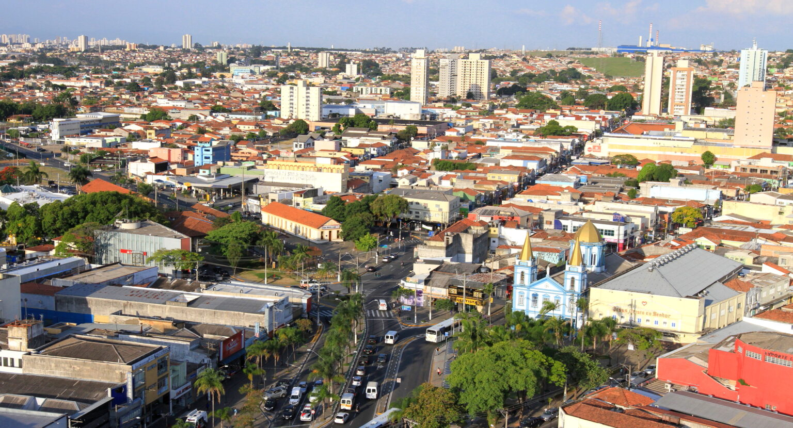
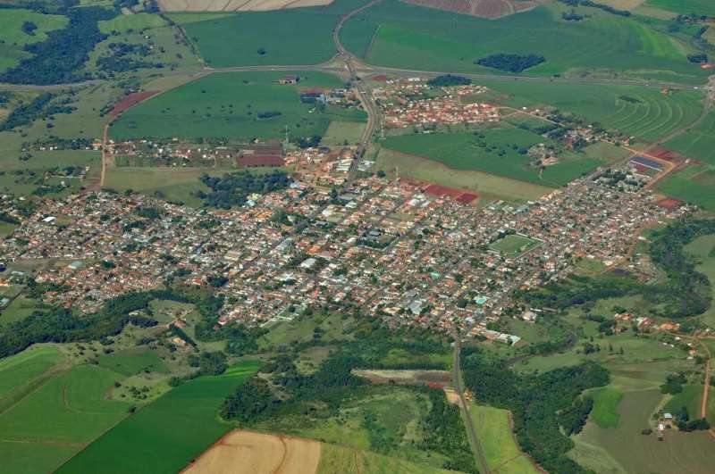

Tecnologia e suporte
Manutenção de computadores e celulares, redes e fundamentos de infraestrutura.

SOBRE MIM
Nascido em Jacareí-SP, tenho uma trajetória com experiências diversas e uma formação em tecnologia que segue em constante evolução.

TRAJETÓRIA
Sou tecnólogo em Geoprocessamento pela Fatec Jacareí e técnico em Redes de Computadores pela Etec Cônego José Bento. Atualmente, curso Desenvolvimento de Software Multiplataforma na Fatec Jacareí.
Ao longo da minha jornada, atuei em ambientes administrativos, industriais, agrícolas, comerciais e de serviços. Também desenvolvi experiência com georreferenciamento, manutenção predial, computadores e celulares. Esse repertório fortalece uma visão prática para entender problemas e buscar soluções.
EXPERIÊNCIAS QUE COMPLEMENTAM
Manutenção de computadores e celulares, redes e fundamentos de infraestrutura.
Formação em geoprocessamento e experiência com georreferenciamento.
Vivência administrativa, industrial, agrícola, comercial e de atendimento.
MINHA HISTÓRIA
Jacareí é minha cidade natal e Assis foi casa durante quatro anos.

